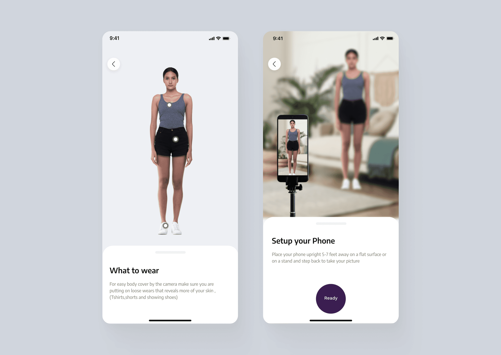
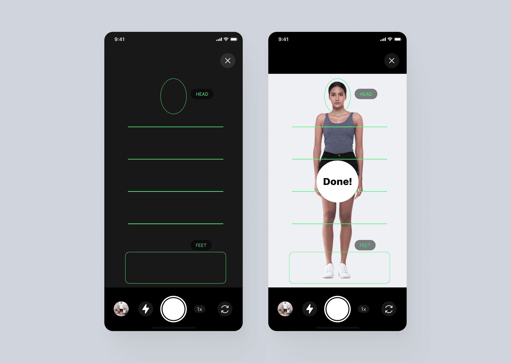
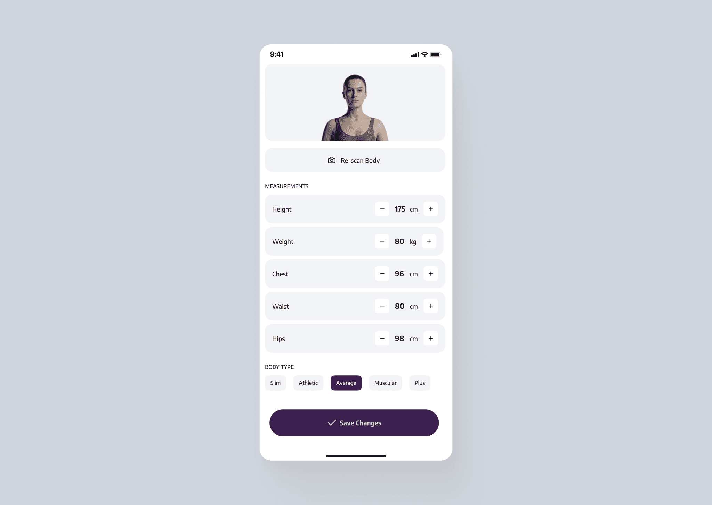
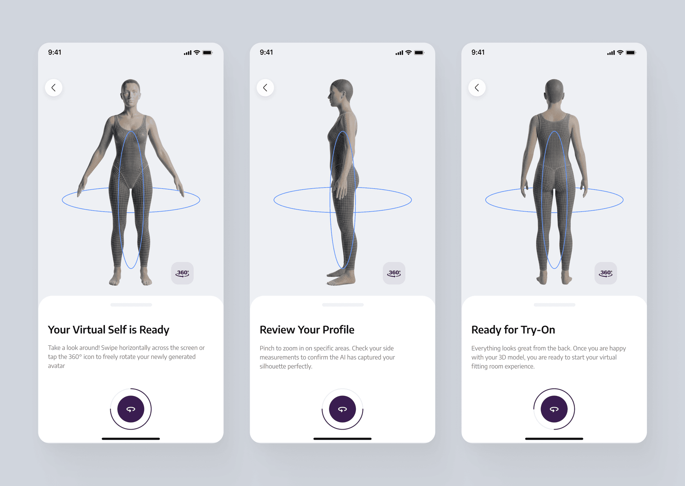
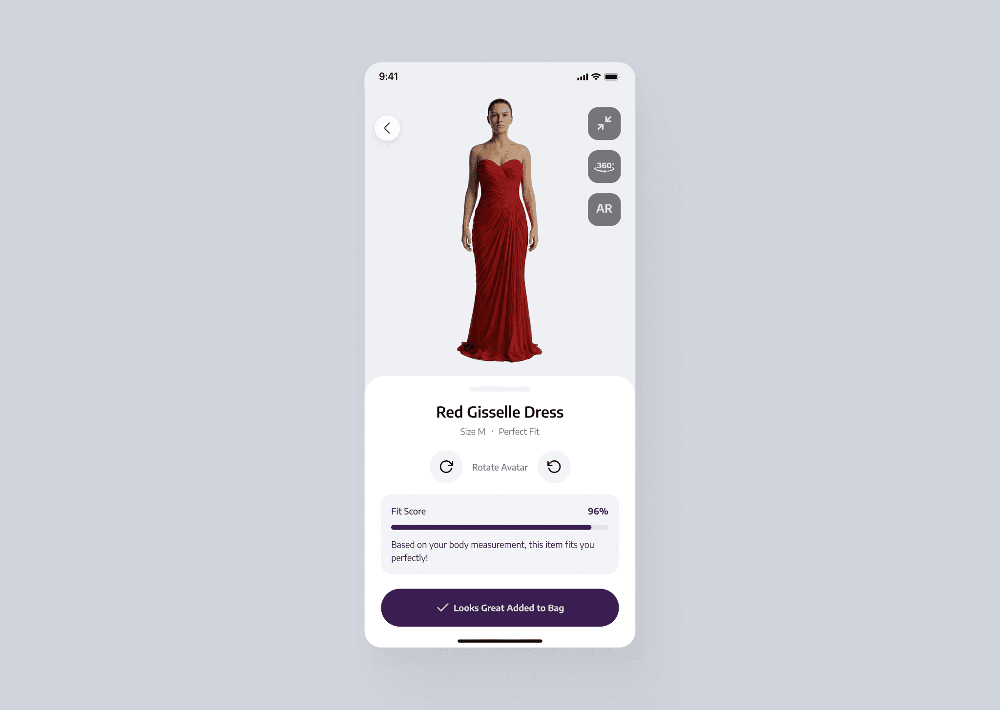
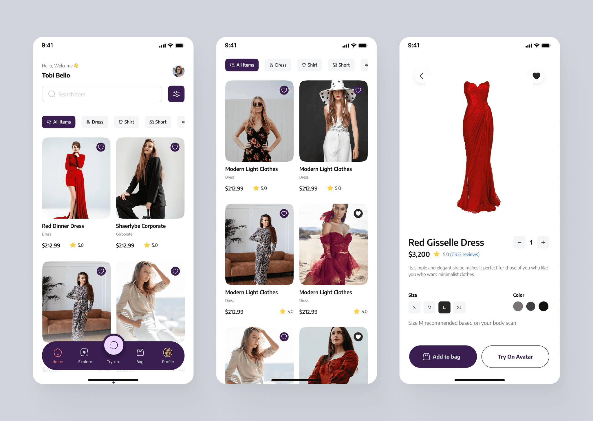

You see an outfit on a model, check the size guide, and hope it looks just as good on you. When it doesn’t fit, it goes back.
FitVision was designed to change that.
I led the design of an augmented reality fitting room that lets shoppers scan their bodies, try on clothes virtually, and see how well an item fits before making a purchase.
The challenge was making complex technology feel simple enough for anyone to use.
The Experience
The first challenge was getting users through the body-scanning process.
Asking someone to stand in front of their phone and scan their body can feel uncomfortable, especially when they don’t know what to expect. I designed a visual onboarding experience that guided users through the process, showing them how to position themselves and align their head and feet.


I also accounted for imperfect scanning conditions. When the AI couldn’t get accurate measurements, users could manually adjust their chest, waist, and hip measurements rather than having to start over.

Once the scan was complete, another challenge emerged: getting users to trust what they were seeing.
A virtual outfit can easily look like a simple filter. To make the experience more convincing, I introduced a transition that showed the user’s 3D body mesh before displaying the clothing. This gave users a glimpse of the underlying body-mapping process and helped explain how the virtual fitting worked.

Making Fit the Focus
A realistic-looking avatar wasn’t enough. Users still needed to know whether an item would actually fit.
I designed the Fit Score as a central part of the shopping experience. By comparing the garment’s measurements with the user’s body data, the app could present a clear fit indicator, such as 96%.
Rather than leaving shoppers to interpret measurements or guess their size, the Fit Score gave them a more straightforward way to evaluate an item.

I carried this thinking into the shopping experience, keeping the interface familiar while making the virtual try-on and fit information part of the purchase journey.
When an item received a high Fit Score, the primary action could reflect that confidence with a contextual “Looks Great, Add to Bag” prompt.

The Results
The MVP beta tests showed promising results:
Under 90 seconds: Users could complete avatar creation through the guided scanning experience.
12–15 items: Beta users tried on an average of 12 to 15 items within the 360-degree viewer.
Positive fit feedback: Qualitative feedback indicated that the Fit Score helped users feel more confident about their purchase decisions.
FitVision explored how AR and AI could make online shopping feel more personal, helping shoppers make better-informed decisions before adding an item to their cart.